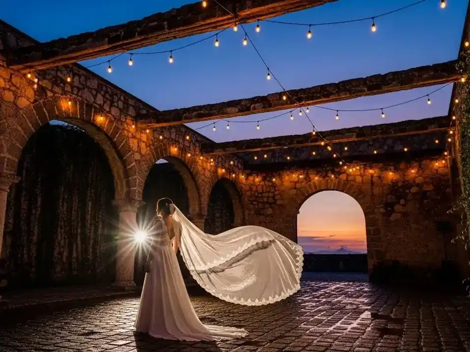
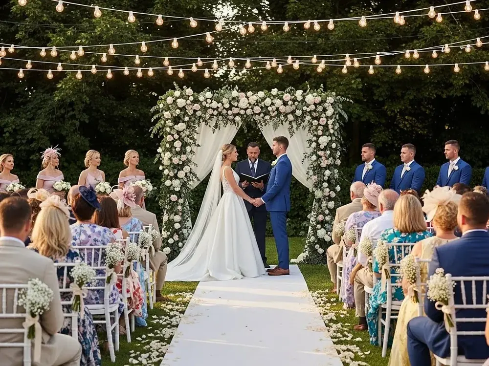
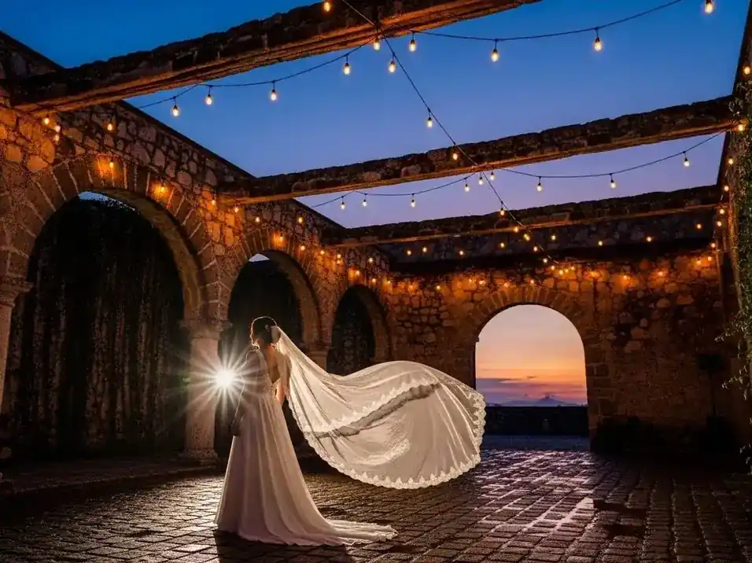
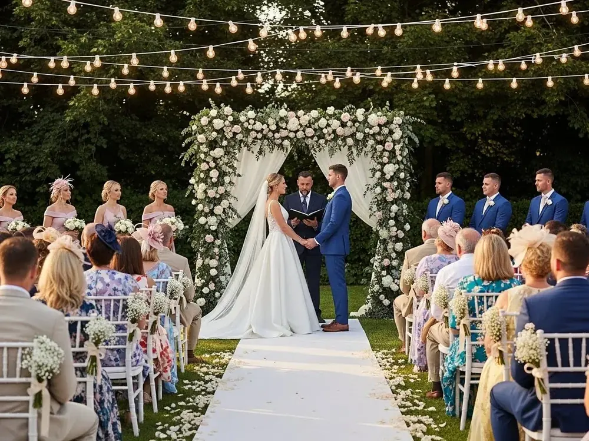

Aprende a iluminar tu boda en un viñedo en Querétaro con guirnaldas de luces y crea un ambiente mágico.
Crea una Boda Mágica con Guirnaldas de Luces
Organizar una boda en un viñedo es una experiencia única que combina la belleza natural con la elegancia y el romance. Imagina casarte rodeado de hileras de vides, con un atardecer dorado como telón de fondo. Pero para que este sueño se haga realidad, la iluminación juega un papel crucial. Aquí es donde las guirnaldas de luces entran en escena, elevando la atmósfera a un nivel completamente nuevo.
En esta guía, te llevaremos paso a paso por el proceso de planificación de la iluminación con guirnaldas para tu boda en un viñedo, centrándonos en un lugar espectacular: el viñedo Freixenet en Querétaro. Aprenderás desde cómo medir los espacios hasta elegir el tipo de foco adecuado, garantizando que tu evento brille con luz propia.
¿Sabías que la luz puede transformar completamente un espacio? Una iluminación bien planeada no solo realza la belleza del lugar, sino que también crea un ambiente acogedor y memorable para tus invitados. Al final de esta lectura, estarás listo para iluminar tu boda de manera profesional y con estilo.
Acompáñanos en esta aventura luminosa y descubre cómo las guirnaldas de luces pueden hacer que tu boda en un viñedo sea tan mágica como la habías soñado.
Planificación Inicial de la Iluminación
Planificar la iluminación de tu boda en un viñedo requiere atención a varios detalles para asegurar que todo esté perfectamente coordinado. El primer paso es medir los espacios donde colocarás las guirnaldas de luces. En un viñedo como Freixenet, puedes considerar las áreas entre las hileras de vides, encima de la zona de cena al aire libre, y alrededor de las barricas para crear un efecto envolvente.
Una vez que conozcas las dimensiones del área, el siguiente paso es elegir el tipo de foco que mejor se adapte al ambiente que deseas crear. Las bombillas Edison son una excelente opción si buscas un look vintage y cálido. Estas bombillas, con su filamento visible, emiten una luz ultra cálida de 2700K, ideal para eventos que buscan un toque nostálgico.
Calcular la cantidad de guirnaldas necesarias es crucial. Usa la fórmula: área x 1.5 = metros de guirnalda. Por ejemplo, si el área es de 20 metros cuadrados, necesitarás al menos 30 metros de guirnaldas para cubrirlo adecuadamente.
Después, define los puntos de electricidad necesarios. Es vital coordinarte con el lugar del evento para asegurarte de que haya suficientes tomas de corriente. Considera también el uso de extensiones y reguladores para evitar sobrecargas.
Finalmente, coordina con el equipo del lugar para la instalación. Algunas áreas pueden requerir postes o cables adicionales para sujetar las guirnaldas. En este punto, una empresa como REDEIL puede ser de gran ayuda, con su amplia experiencia en la instalación y operación de sistemas de iluminación para eventos.
Años de experiencia
REDEIL tiene más de 30 años iluminando eventos en México, garantizando calidad y profesionalismo.
Ejemplos Inspiradores en Viñedos
Cuando pensamos en una boda en un viñedo, la imaginación vuela a escenarios de ensueño llenos de encanto. Un ejemplo destacado es el viñedo Freixenet en Querétaro, donde las guirnaldas de luces han transformado numerosas celebraciones en experiencias inolvidables. Imagina un camino iluminado entre las vides, guiando a tus invitados hacia una recepción mágica bajo un cielo estrellado, realzado por la suave luz dorada de las guirnaldas.
Una de las formas más efectivas de utilizar guirnaldas de luces en un viñedo es creando techos luminosos sobre las zonas de cena al aire libre. Al suspender las luces a una altura de 2.5 a 3.5 metros, lograrás un efecto envolvente que no solo ilumina, sino que también añade una sensación de intimidad y calidez al espacio. La distancia entre los focos puede variar de 30 a 50 centímetros, dependiendo de cuán denso desees el brillo.
En eventos anteriores realizados en Freixenet, las guirnaldas han sido utilizadas para resaltar las texturas de las barricas de vino, creando un contraste impresionante con el entorno natural. Este tipo de iluminación no solo es funcional, sino que también actúa como un elemento decorativo clave, añadiendo un toque de sofisticación y estilo.
Además, la elección de luces LED vintage puede ser una excelente alternativa a las bombillas tradicionales. Estas luces ofrecen el mismo aspecto estético que las bombillas Edison, pero con un consumo energético mucho menor, lo que las hace ideales para eventos prolongados donde el control del presupuesto es esencial.
Inspirarse en estos ejemplos y adaptarlos a tu visión personal te permitirá crear un evento que no solo será recordado por su belleza, sino también por su originalidad y atención al detalle.
Considera el clima
El clima puede afectar la instalación de las luces. Asegúrate de tener un plan de respaldo en caso de lluvia.
Aspectos Técnicos y Prácticos
Para que la iluminación de tu boda en un viñedo sea un éxito, es importante considerar varios aspectos técnicos. Aquí te presentamos una lista detallada de consideraciones prácticas:
- Tipo de bombilla: Las bombillas Edison y los LEDs vintage son populares por su apariencia cálida y acogedora.
- Distancia entre focos: Se recomienda una separación de 30 a 50 cm para un efecto equilibrado.
- Altura ideal: Las luces deben colgarse a una altura de entre 2.5 y 3.5 metros.
- Potencia: Calcula los watts por metro para asegurarte de no sobrecargar el sistema eléctrico.
- Fuentes de energía: Verifica la disponibilidad de tomas de corriente y la necesidad de extensiones.
- Instalación: Usa estructuras existentes como árboles o instala postes temporales para sostener las luces.
- Clima: Considera la resistencia al agua y la durabilidad de las guirnaldas en caso de lluvia.
- Seguridad: Asegúrate de que todos los cables estén bien sujetos para evitar accidentes.
Estos aspectos técnicos son fundamentales para garantizar que la iluminación no solo sea estéticamente agradable, sino también segura y funcional. Contar con la asesoría de expertos como los de REDEIL puede hacer una gran diferencia, ya que ofrecen un servicio completo que incluye desde la consultoría hasta la instalación y operación durante el evento.
Beneficios de usar guirnaldas de luces
- Estética encantadora: Las guirnaldas crean un ambiente cálido y acogedor que transforma cualquier espacio.
- Versatilidad: Pueden usarse en una variedad de configuraciones y estilos, adaptándose a diferentes temas de boda.
- Eficiencia energética: Las luces LED consumen menos energía, lo que es ideal para eventos prolongados.
- Fácil instalación: Con la ayuda adecuada, las guirnaldas son simples de instalar y ajustar según sea necesario.
- Ambiente inolvidable: La iluminación adecuada crea recuerdos duraderos, haciendo que tu evento sea memorable para todos los asistentes.
Galeria de Luces Colgantes para Fiestas
 
Lista Detallada de Materiales
Organizar la iluminación de tu boda requiere una lista detallada de materiales para asegurar que no falte nada el día del evento. Aquí te presentamos una guía completa de lo que necesitas:
- Guirnaldas de luces: Calcula los metros necesarios según el área a cubrir.
- Bombillas: Asegúrate de tener un stock adecuado de bombillas Edison o LED vintage.
- Postes de soporte: Necesarios si no hay estructuras naturales para colgar las luces.
- Extensiones eléctricas: Para conectar las guirnaldas a las tomas de corriente.
- Reguladores de voltaje: Para evitar sobrecargas y proteger el sistema eléctrico.
- Cableado adicional: En caso de necesitar conexiones extra.
- Herramientas de instalación: Como escaleras, alicates y cinta aislante.
- Equipo de seguridad: Cascos y guantes para el equipo de instalación.
- Plan B para clima: Opciones de protección en caso de lluvia.
- Guía de montaje: Un esquema de cómo se instalarán las luces.
Tener todos estos materiales listos y organizados te permitirá realizar la instalación de manera eficiente y sin contratiempos. Una planificación meticulosa es clave para el éxito del evento, y contar con proveedores confiables como REDEIL garantiza que todos los elementos estén en su lugar cuando más los necesites.
Consejos y Recomendaciones
Para que tu boda en el viñedo sea un evento inolvidable, aquí te compartimos algunos consejos y recomendaciones basados en la experiencia de expertos en iluminación:
1. Prueba de iluminación: Realiza una prueba previa al evento para asegurarte de que todo funciona correctamente y que la distribución de las luces es la adecuada.
2. Coordinación con otros proveedores: Asegúrate de que los equipos de fotografía y decoración estén al tanto de la iluminación para que todo esté en armonía.
3. Planificación del montaje: Dedica tiempo suficiente para la instalación de las luces, considerando posibles imprevistos.
4. Atención al detalle: Pequeños detalles como el color de las luces y la densidad de la iluminación pueden hacer una gran diferencia en la atmósfera general.
5. Considera la sostenibilidad: Opta por luces LED para reducir el consumo energético y ser más amigable con el medio ambiente.
6. Flexibilidad: Mantén una actitud flexible para adaptarte a cambios de última hora, especialmente en eventos al aire libre.
7. Disfruta el momento: No olvides disfrutar de tu día especial y confiar en los profesionales para que se encarguen de los detalles técnicos.
Estos consejos te ayudarán a manejar el proceso de iluminación con confianza y tranquilidad, asegurando que tu boda sea tan mágica y especial como la habías imaginado.
Contenido Adicional Valioso
Además de los aspectos técnicos y prácticos, hay otras consideraciones que pueden enriquecer la experiencia de tu boda en un viñedo. Aquí te ofrecemos contenido adicional valioso que puede ser de gran ayuda:
Incorporación de tecnologías modernas: Considera la posibilidad de integrar sistemas de iluminación inteligente que te permitan ajustar la intensidad y el color de las luces durante el evento, creando diferentes atmósferas a lo largo de la noche.
Iluminación temática: Si tu boda tiene un tema específico, como vintage o bohemio, asegúrate de que las luces reflejen ese estilo. Las bombillas Edison son perfectas para un ambiente vintage, mientras que las luces de hadas pueden añadir un toque bohemio y mágico.
Involucrar a los invitados: Una idea original es proporcionar a tus invitados pequeñas linternas o luces LED para que formen parte del espectáculo de luces, creando momentos interactivos y memorables.
Documentación del evento: Contrata a un buen fotógrafo que sepa capturar la magia de la iluminación y la atmósfera del viñedo. Las fotos con la luz adecuada pueden convertirse en recuerdos valiosos que durarán toda la vida.
Estos elementos adicionales no solo mejoran la experiencia del evento, sino que también añaden un nivel extra de personalización, haciendo que tu boda sea realmente única y especial.
Pensamientos Finales y Siguientes Pasos
Ya tienes toda la información que necesitas para planificar una iluminación espectacular con guirnaldas de luces en tu boda en el viñedo de Freixenet en Querétaro. Con cada detalle considerado y planificado, estás un paso más cerca de crear ese evento de ensueño que tanto has imaginado.
El siguiente paso es contactar a un proveedor confiable que pueda ayudarte a llevar a cabo tu visión. Con más de 30 años de experiencia en el mercado, REDEIL es una excelente opción para asegurar que todos los aspectos de la iluminación de tu boda estén cubiertos con profesionalismo y atención al detalle.
Recuerda, la iluminación no solo es funcional, sino que también establece el tono y la atmósfera de tu evento. No subestimes el poder de una iluminación bien planificada para transformar un espacio y crear recuerdos imborrables para ti y tus invitados.
Finalmente, disfruta del proceso y de cada momento de la planificación de tu boda. Este es un viaje único que culminará en uno de los días más importantes de tu vida. Confía en los expertos, relájate y prepárate para celebrar en un entorno mágico e iluminado por la calidez de las guirnaldas de luces.
Preguntas Frecuentes
Considera el estilo de tu boda y el ambiente que deseas crear. Las bombillas Edison son ideales para un look vintage, mientras que las luces LED son más eficientes energéticamente.
Necesitarás guirnaldas, postes de soporte, extensiones eléctricas, y herramientas básicas como escaleras y alicates.
Calcula la cantidad de luz necesaria usando la fórmula: área x 1.5 = metros de guirnalda. Esto te dará una buena base para cubrir tu espacio.
Asegúrate de comunicarte con el equipo del lugar para verificar las opciones de electricidad y cualquier restricción que pueda existir.
Ten un plan de respaldo que incluya opciones de iluminación resistentes al agua y estructuras de protección para las áreas clave de tu evento.
Cotiza tu Renta de Luces Colgantes para Fiestas Hoy
Recibe una propuesta personalizada para tu evento. Sin compromiso, respuesta en menos de 24 horas.
Cotizar por WhatsApp